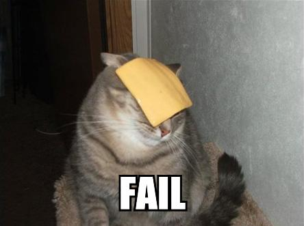
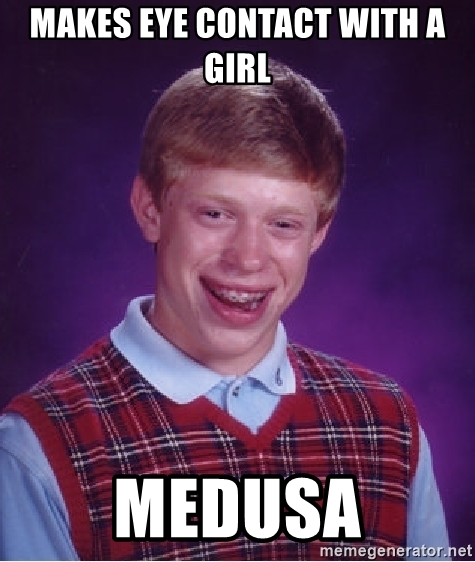
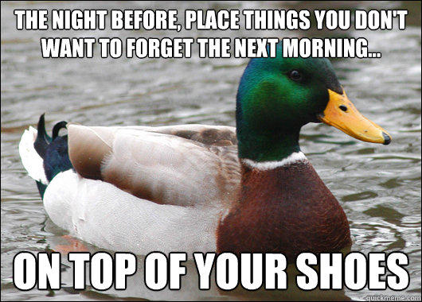
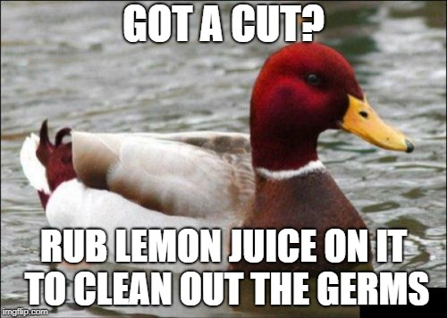
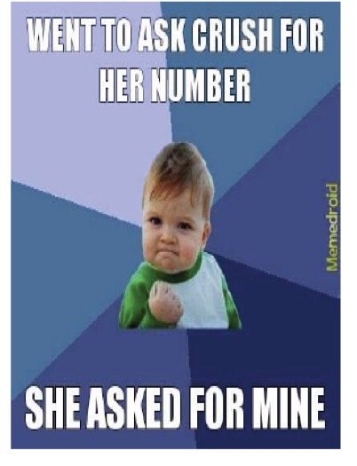
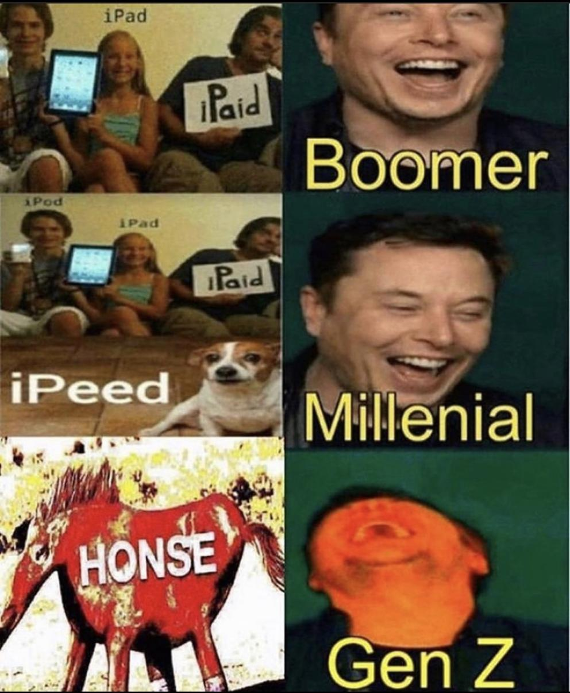

All my slides are presented using [reveal.js](revealjs.com), and do not exist as Powerpoint or PDF, but instead, as websites. To navigate my slides, use the arrow keys, the onscreen controls, or swipe on mobile. To scan through slides, hit 'Escape'. To print or make a PDF, add ?print-pdf to the URL after .html in Google Chrome and then 'Print' as usual. (Please note that PDF/printing is not 'officially supported' by the instructor, and the results may be very strange in places) --- ### Handout Mode - You can also turn slides into a handout by adding "_handout" before .html --- # Linguistics 42: The Linguistics of the Internet ### Dr. Will Styler --- ### Today's Plan - Introductions - Why do this? - What's Will's problem? - How are we doing this? - Our roles - Our plan --- ## Introductions --- ## Dr. Will Styler Teaching Professor, Linguist, Gigantic Nerd <img class="r-stretch" src="people/will.jpg"> --- ## Lexi Ricasata --- ## Why do this? --- ### I watched memes develop into their modern form on the Internet - We went from text, to 'reaction images' and comics, to 'image macros', to the modern meme - I was an early denizen of many of the early internet meme sites - IRC, Something Awful, Fark, YTMND, 4Chan*, eBaumsWorld, and more - 4Chan wasn't always what it is today - ... but it always kind of was. Yikes. --- ### I started in the LolCat Era --- <img class="r-stretch" src="humorimg/orly.jpg"> --- <img class="r-stretch" src="humorimg/omg.jpg"> --- <img class="r-stretch" src="humorimg/serious_cat.jpg"> ---  --- ### I was an 'expert' then - Quoted in 2009 by News.com.au: > "Understanding what they're saying and simply knowing that they exist can be considered a showing of one's internet cultural knowledge," says Mr. Styler, who runs the [Linguistic Mystic](http://linguisticmystic.com/) blog. > "In the same sense that using a reference from a hot new movie can include you in a group, doing something using an 'im in ur...' construction is a mark of somebody who understands internet culture." <https://amp.news.com.au/news/rise-of-the-lolcats/news-story/86a968cb6722c05b6bfd559f30445ee9> --- ### I was there when many of the templates were born ---  --- --- <img class="r-stretch" src="memes/advice_animals/steve.jpg"> --- ### I watched Advice Animals become a thing ---  ---  ---  --- --- --- ### ... and now I'm watching the world change ---  --- <img class="r-stretch" src="memes/sourcream.jpg"> --- <img class="r-stretch" src="memes/evil_santana.jpg"> --- <img class="r-stretch" src="memes/stickroll.gif"> --- <video class="small" controls src="memes/skibidi_toilet.mp4" height="300" width="300"></video> [Sauce](https://www.youtube.com/watch?v=tzD9OxAHtzU) - /br:::: skibiri d̪õm d̪õm d̪õbijɛsʲɛs skibiri d̪abl̩d̪m ni ni/ --- ### I think memes are a rich communicative field - ... which are just as worth of study as any others --- ### 'Linguistics of Memes' had a branding problem - "Oh, I'm not into memes, but I'm really interested in TikTok audios!" - "I want to do my project on uwu, but that's... not a meme?" - New phenomena arise every day that aren't memes, but are *memetic* - *Where on earth do we draw the line?* --- # What is a 'meme' anyways? --- ### The Dictionary Definition > A **meme** is an idea, behavior, or style that spreads by means of imitation from person to person within a culture and often carries symbolic meaning representing a particular phenomenon or theme [Wikipedia](https://en.wikipedia.org/wiki/Meme) --- ### Key Components - Idea or Behavior - Viral spread - Culturally grounded - Carries Symbolic Meaning - **What else acts like this?** --- ### Viral Ideas, Carrying Meaning in Cultures - Memes (duh) - Physical Actions (e.g. planking, flossing, peace signs) - TikTok Trends and Audios - Aesthetics and Leitmotifs (e.g. deep frying, meaningful fonts) --- ### Viral Ideas, Carrying Meaning in Cultures (cont.) - Paralinguistic Stuff: Emoji use, Keysmashing, SpOnGeBoB TeXt - Interaction patterns (e.g. "That'll be $69.42" "Nice.") - Dogwhistles (words that subtly reveal affiliation with a group/ideology) - Culturally Specific Words (e.g. 'gg', 'any %', 'hotep', 'pov') - **All of language!** --- ### All language is memetic! - Idea or Behavior - Viral spread - Culturally grounded - Carries Symbolic Meaning --- ### The Scope of this class is Large - You're looking for ideas or behaviors, spread virally, within cultures, with meaning, on the internet - ... and you'll use linguistic analysis on them - *One Handy Rule: Try to choose things that are considered 'non-standard' usage of language* - **The world is your oyster, and anything's a meme if you convince me** - This means I want to see lots of interesting new stuff! --- ### You'll be looking at 'Linguistic Forms' - This is a wildly broad term - Words, pronunciations, memes, meme templates, paralinguistic stuff - Basically anything which carries meaning and is linguistically analyzable --- # What is Will's Problem? - (I mean, one among many) --- ### To quote a student's CAPE evaluation... - # *"His memes are kind of old"* --- <img class="r-stretch" src="memes/advice_animals/fatality.jpg"> --- ### This is a known issue --- <img class="r-stretch" src="memes/lecturermemes.jpg"> --- ### ... and all language is always changing - 'You never step into the same river twice' - In fact, I'll be making an effort to use millenial memes and language to prove this point! - ... but memes move fast! --- ### Remember this? <img class="r-stretch" src="memes/bernie.png"> --- ### This presents a problem --- ### "How the heck can I teach a class on emerging and new language, when I don't speak the modern dialect?" - The answer? - ## With your help! --- ## How are we doing this class? --- ### This class will be different from any I've ever taught before - Generally, I'm telling you all how the world works - How language works, how computers work, how phonetics, phonology, morphology, or hearing works - I give you information, you give it back to me on tests - You'll work through problems, and try to arrive at 'the correct answer' --- ### That will not work here - I know about my era of memes - I am incredibly online - I know how language works - I don't know exactly how memes work lately - I don't know how your parts of the internet work - There is no 'right answer' that you can be tested against - Not like there's a textbook for this --- ### This is unlike any other class in the department... - Except one - **This is kind of a Field Methods class** --- ### Field Methods - The professor sits down with a group of students and a speaker of a language that *they don't know* - The professor teaches the students *how to find out* how the language works - ... and they all study the language *together* by talking with somebody who knows the language --- ### I'm going to give you tools and structure - Elements of linguistic analysis and linguistic theory - ... with a specific mind towards concepts which I think are meaningful here - ... and with examples in my old school understanding - I'll give areas for us to focus on each week - ... and questions I think we'll learn things from asking --- ### You all will do the analysis and bring the data - You'll apply what we're talking about to the online communication in your lives - We'll be there to help, but *you have the data* - You'll take the analyses deeper - Your final project will go beyond what we've done in class - You'll focus on a specific area - Maybe a site, a community, an interest group, a kind of meme, something that's interesting to you! --- ### Together, we'll learn how *this* language works --- ### This makes this class very different than the norm - I'm depending on you all as much as you're depending on me! - **We're on the same team!** --- <img class="r-stretch" src="memes/epichandshake.jpg"> --- ### Grading will be weird too! <https://savethevowels.org/42> --- ### This is a contract - I am giving you the power to determine your own grade - You are giving me and your classmates good work in return - 'Blowing off' the class is a jerk move, please respect our community by putting in effort, or leave it --- <img class="r-stretch" src="memes/contract_based_grading.jpg"> --- # Our roles --- ### My Roles - To teach you how linguists analyze the parts of language relevant to memes - To present you all with discussions and activities which will help us engage with the language of memes - To create a structure for the course and ensure a safe environment for learning - To guide you through difficulties you'll face on the path - To evaluate you on your effort, participation, and engagement with the problems at hand --- ### Your IA's Roles - They will help guide you in your analyses and offer suggestions and feedback - They will be a resource in between classes - They'll help me to evaluate your effort, participation, and engagement - They'll help me to maintain a safe space in our classroom, virtual and otherwise --- ### Your Roles - You will participate, coming to class sessions, chatting in Discord, asking questions, and engaging with the activities - You'll prepare for class sessions, finding and bringing memes and examples from your daily life, and completing the discussions - You'll interact with your group members during class and during your final project, and stay home when you're sick. - You'll be kind, considerate, and build and maintain our classroom community --- ### You should probably choose a different class if... - You won't be able to regularly attend class sessions - Podcasting is not an option for much of what we're doing - You'd rather not work in groups and participate in discussions - Don't be deadweight for your group or in the class - You have a deep innate desire to be an edgelord - Kindness should motivate you, not desire to troll or harm - You don't really care for memes or the internet - You have a pun allergy - ... some of my puns will be apollen! --- # Our plan --- ### Week 1: Building Community - What are we doing here? - What kinds of memes are and aren't welcome in our classroom? - Who are we working with, and how will we do this ethically? --- ### Speaking of community - Start finding groups in Discord and Canvas - Feel free to post a 'Seeking' ad if you'd like to take a leadership role or advocate for an area of study, or just chat with folks and find kindred souls - Be kind and welcoming, damnit - You can change groups later, that's fine! --- ### Week 2: Are Memes Linguistic? - Does this stuff actually make sense as 'language'? - What are grammaticality judgements? - Can memes and new language be 'grammatical' or 'ungrammatical'? --- ### Week 3: Form and Memeing - How do we find meaningful chunks of words in language? - How does this relate to memes and new language and behavior? --- ### Week 4: Generalization and Mememorphology - What meaningful 'chunks' exist within memes? - How can we take advantage of these chunks of form and meaning to make new memes? - Do linguistic ideas of productivity and creativity make sense here? --- ### Week 5: How do new memetic ideas develop? - How do new words and templates happen? - How do new chunks of memes and words happen? - How do these things evolve over time? --- ### Week 6: Meaning and memes - How do we think about meaning in language? - Do linguistic understandings of meaning play a role in our understanding? - What do these things 'mean' anyways? --- ### Week 7: Project Prep and Intro to Sociolinguistics - How does language intersect with social identity? - **Your project proposals will be due this week!** --- ### Week 8: Identity and Community - What is a language community? - Can we use these linguistic tools to better understand meme usage? - How does our use of these things tell people about who we are? --- ### Week 9: We live in a Society - How do language and culture interact? - How do memes and culture interact? - Can memes be translated across cultures? --- ### Week 10: Language on the Internet *in the future!* - How does language change? - How do these things change? - Do memes become more abstract or concrete or both over time? --- ### Finals Week - You'll submit your final projects on March 20th at Noon --- ### Any questions? --- ### I'm excited - We're rebooting this class with new ideas and approaches - We're opening it up to the entire interweb! - There will be some changes - And what you end up doing will shape what I end up doing - Your enthusiasm will play a big role in making this class more than just a meme --- <huge>Thank you!</huge>